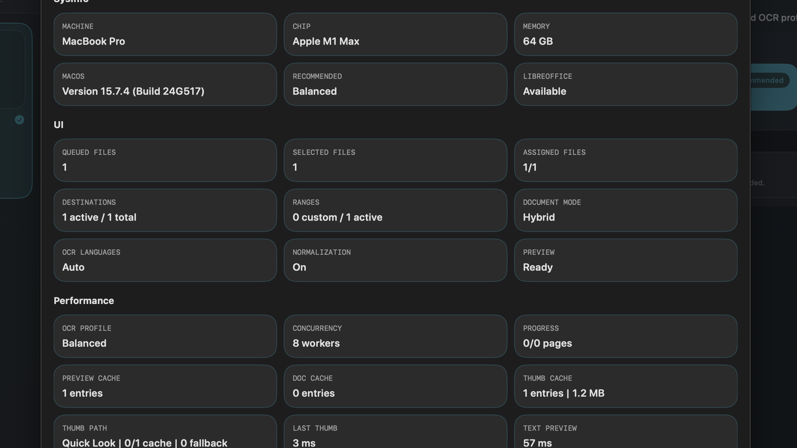
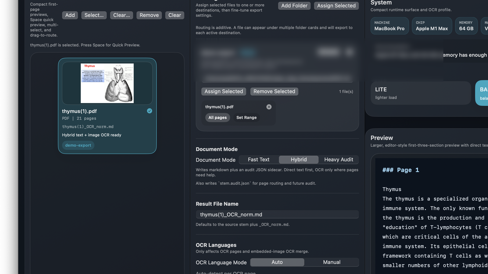

Mixed source structure
The golden set includes text-layer PDFs, scan-like pages, embedded raster figures, and documents that move in and out of OCR fallback within the same file.
Proof Overview
GPT-MD was not tuned around toy examples. Its export engine and app
workflow were tested against difficult real-world academic documents,
with the goal of proving something more important than "a file was
written": that the result remains usable, inspectable, and repeatable.
Corpus
The golden set includes text-layer PDFs, scan-like pages, embedded raster figures, and documents that move in and out of OCR fallback within the same file.
The benchmark logic checks route stability, OCR fallback behavior, normalization impact, and repeatability against stored references.
The point of the harness is not academic curiosity. It is to reduce omission risk before release and make difficult exports reviewable.
Parallel OCR

GPT-MD uses controlled parallel OCR profiles instead of one opaque
OCR setting. Eligible page work is scheduled in bounded parallel
batches so larger mixed documents can move faster while the chosen
runtime profile remains visible to the user.
Lite: 5 workers for a lighter runtime postureBalanced: 8 workers as the practical defaultMax: 10 workers for deliberately heavier OCR throughputCoverage
Export invariants, output naming, route assignment, audit behavior, and deterministic OCR-observation paths are validated directly.
Repeatable headless runs exercise realistic benchmark profiles and longer export paths without requiring the GUI to be present.
The packaged app is also automated through diagnostics, preview, routing, repeated export, cancellation, assignment sheets, and markdown review states.
Structure checks track figure references, theorem/proof headings, table equation lines, and math references so the evidence is not limited to file creation or plain text presence.
Performance smoke, stress, and soak runs split intended markdown
and audit artifacts from stray retained byproducts. The latest
sweep reported retainedOtherArtifactByteCount=0 in all
three performance lanes.
The packaged app-surface lane runs with strict nonfronting proof.
The latest sweep passed semantic checks and nonfronting checks with
frontingCount=0.

GPT-MD was tested as a document-production tool, not just a file
converter. It can handle ugly source material, expose what happened
during export, scale OCR work through explicit profiles, and produce
markdown meant to be used after the export is done.
The latest internal commercial sweep completed on 2026-04-22 across unit, headless smoke/stress/soak, packaged app-surface, workflow performance, and performance smoke/stress/soak lanes. That is a release-readiness signal, not a guarantee that every possible PDF will convert perfectly.